Sopa de caldo "poncima"
 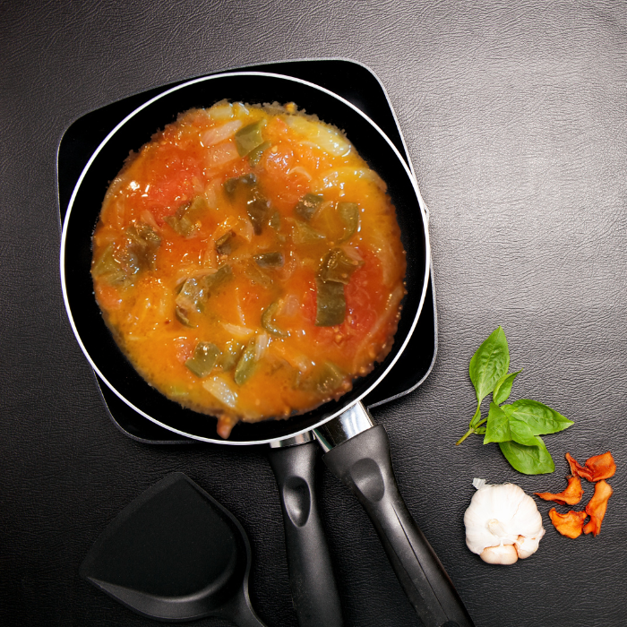
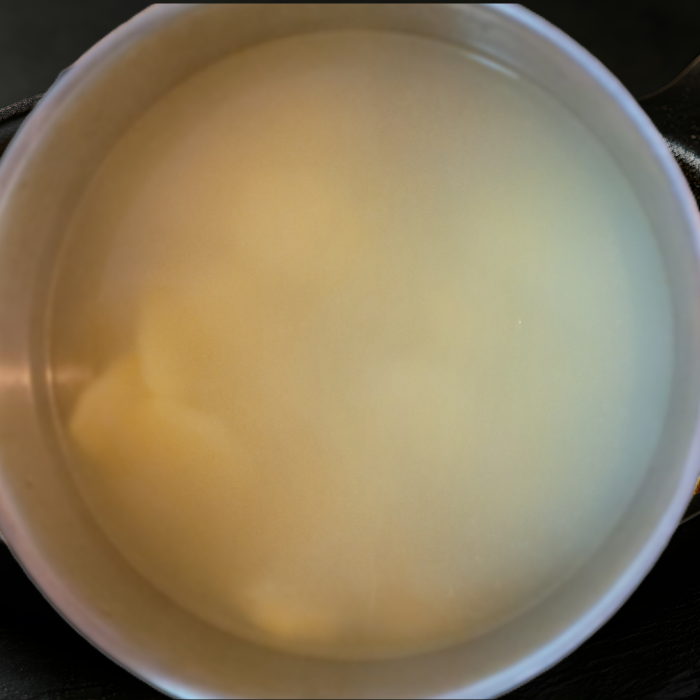
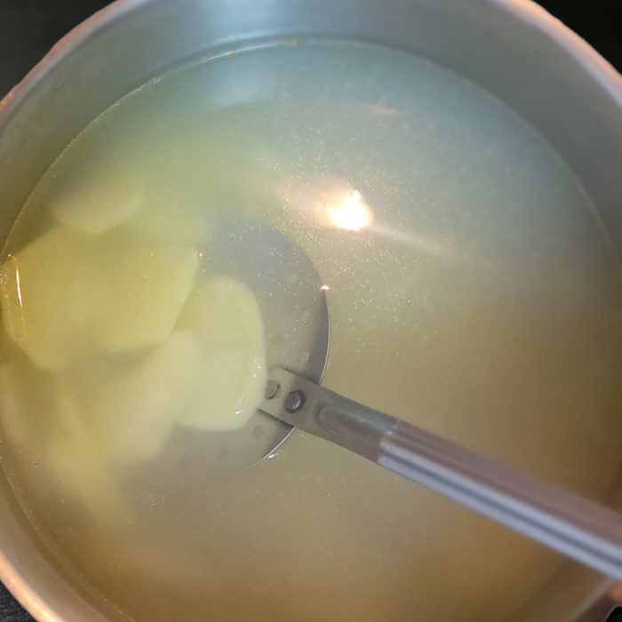
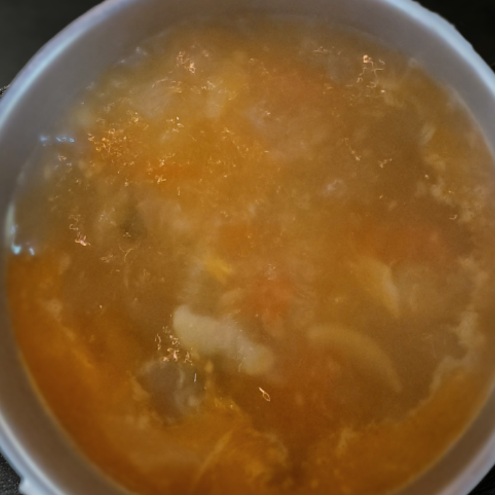
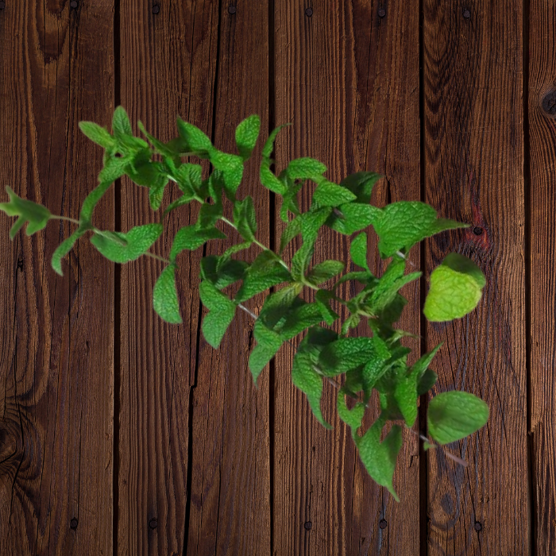
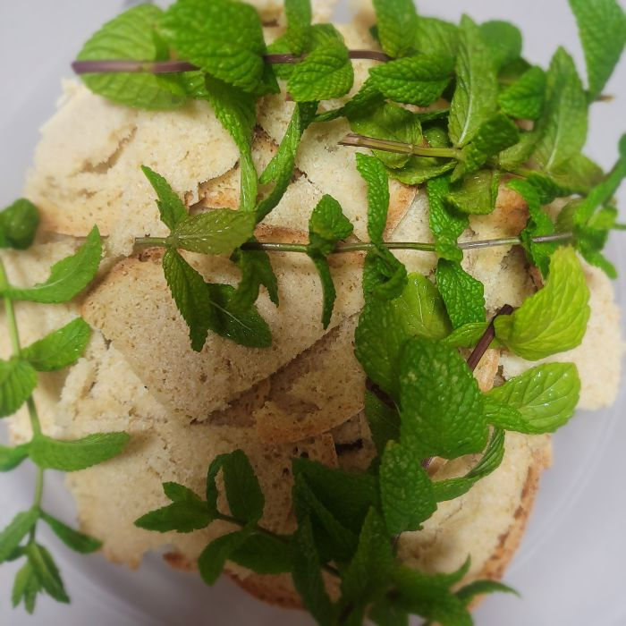
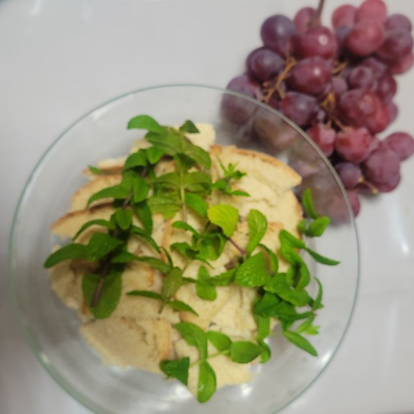
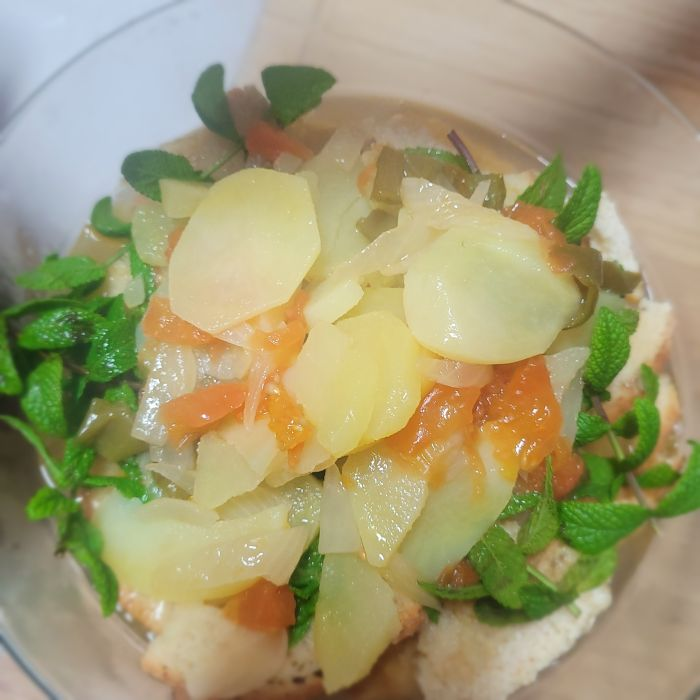
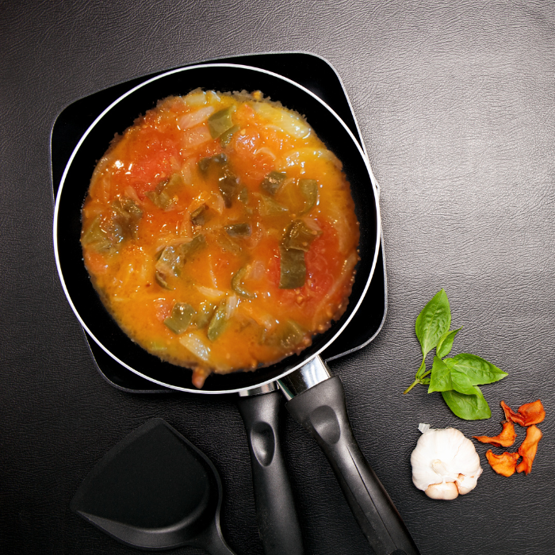
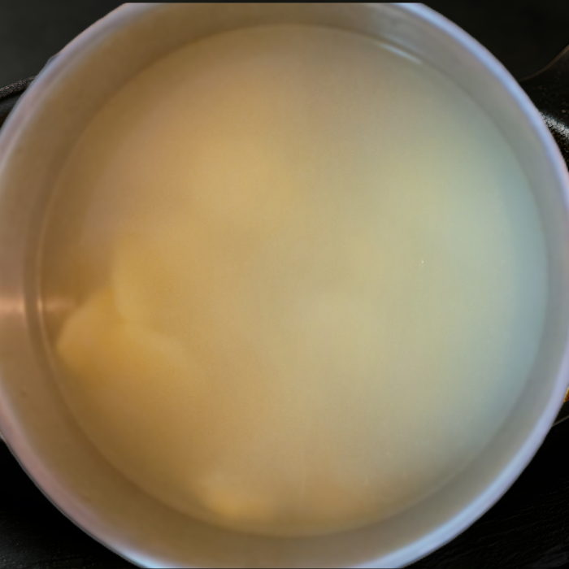
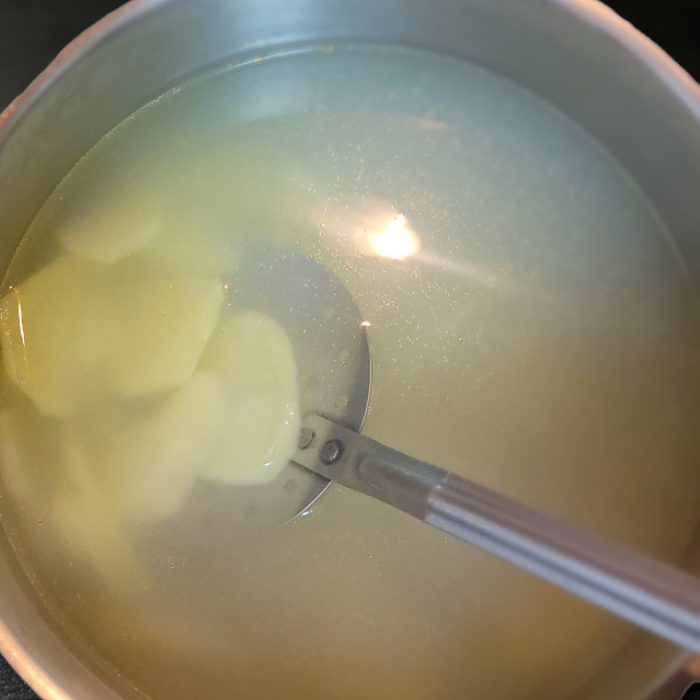
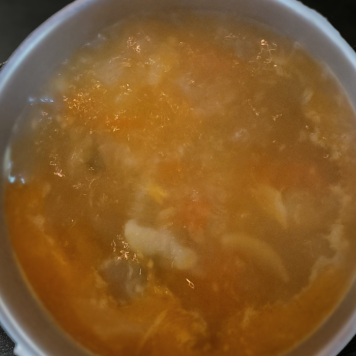
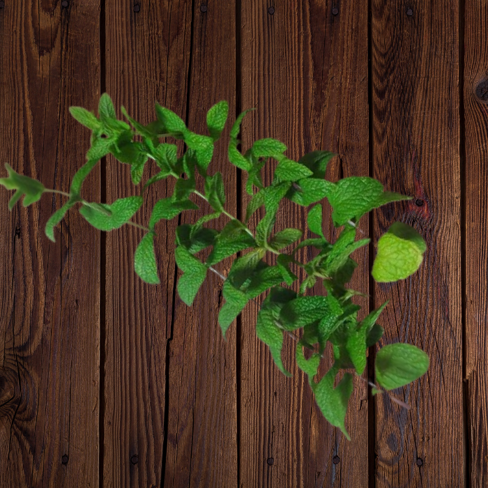
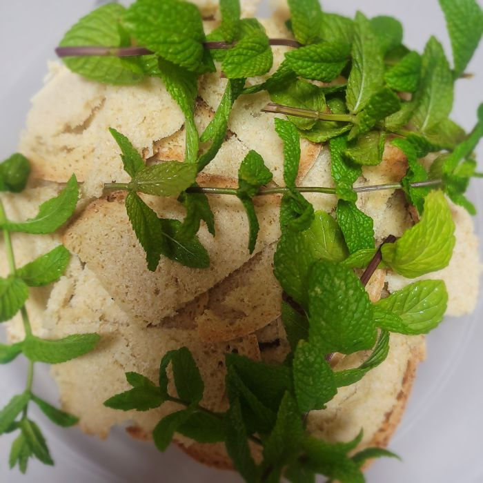
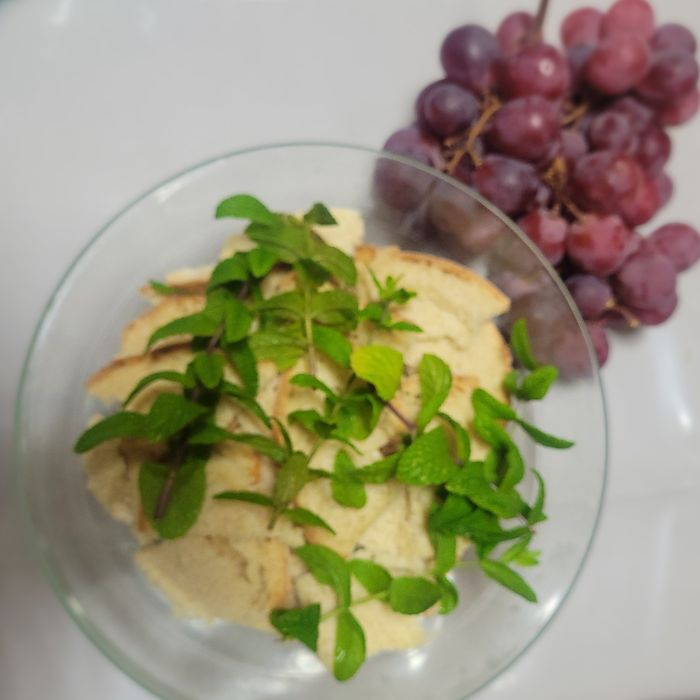
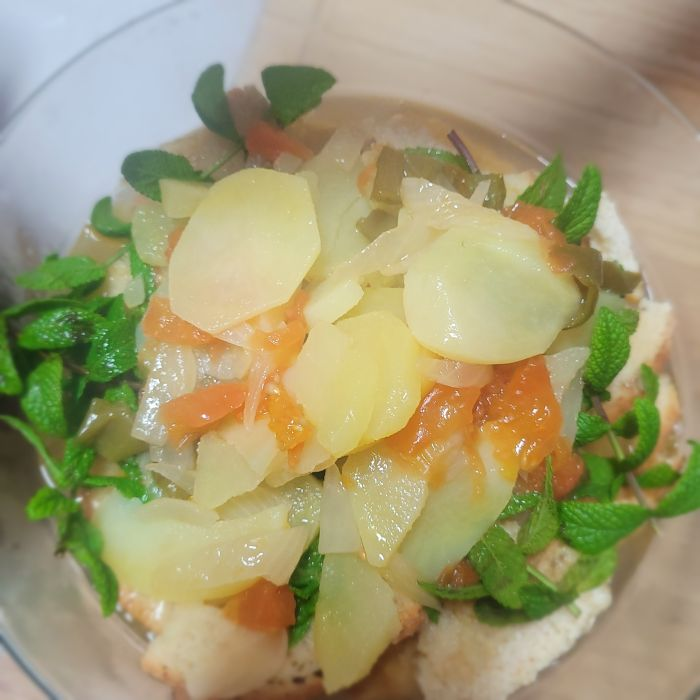
Descripción
Es un plato tradicional de la provincia de Málaga que tiene distintas variantes y reciben distintos nombres según el pueblo donde se haga. Como por ejemplo la sopa perota de Álora o la 'aplastá' en Pizarra.
La sopa de caldo 'poncima' se trata de una sopa de tomate, pimientos, patata y pan, típica de Coín.
Ingredientes
- Media cebolla
- Unos 3 pimientos
- Dos tomates
- Pimiento molido (1 cucharadita)
- Hierbabuena
- Aceite
- Unas 3 ó 4 patatas
- Agua
- Sal
- Pan del día anterior
- Sardinas o boquerones sin espina y fritos (opcional)
Preparación
- En una cacerola se pone a hervir el agua con las patatas, cortadas en rodajas finas, y un poco de sal. Cuando estén cocidas reservar todo.
- Mientras tanto troceamos la cebolla, pimiento, tomate y en una cacerola lo añadimos junto al aceite para hacer el sofrito.
- Una vez tengamos el sofrito hecho, le añadimos el pimiento molido y dejamos sobre un minuto a fuego suave.
- Añadir el sofrito a la cacerola junto a las patatas y el agua, dejar hervir un poco para que se mezclen los sabores y retirar del fuego.
- Por último añadimos la mezcla de la cacerola a la fuente donde previamente tenemos preparada con el pan cortado en finas rodajas.
- Se le pueden añadir sardinas o boquerones sin espina y fritos del día anterior.
- Le ponemos hierbabuena y lo dejamos un poco reposar.
- Si quedase caldo con sofrito se puede guardar para el día siguiente, sólo habría que cocer las patatas y cortar el pan.
- Se acompaña con pepino, melón, uvas…